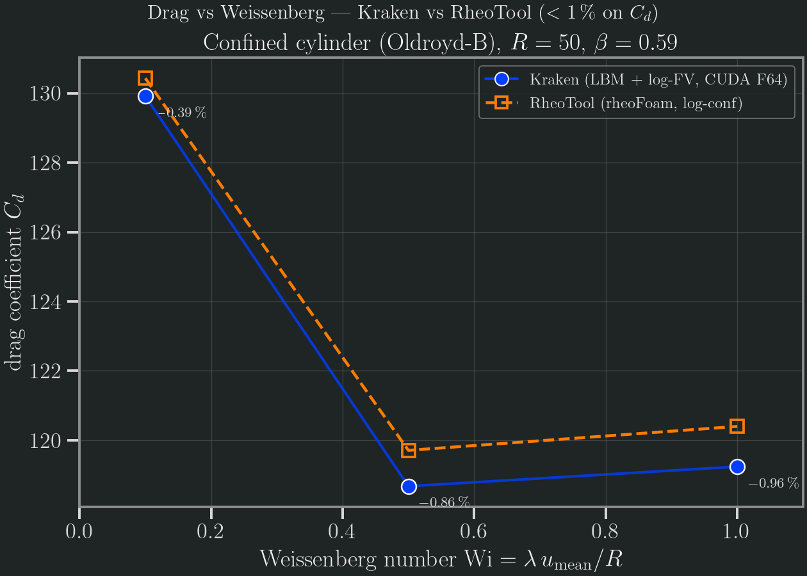

Viscoelastic cylinder (Oldroyd-B)
Viscoelastic flow past a confined cylinder, validated against RheoTool (rheoFoam, OpenFOAM-9, log-conformation) on the canonical confined-cylinder problem — the standard High-Weissenberg-Number-Problem (HWNP) testbed of Alves, Oliveira & Pinho (2001). At the production resolution R = 50, Kraken's v0.3 cut-link drag matches RheoTool to better than 1 % on the integrated drag coefficient Cd across the validated range Wi ≤ 1.
Methodology
Kraken (TRT-LBM + log-conformation finite-volume polymer transport). The flow field uses a D2Q9 TRT collision; a separate finite-volume solver advects the matrix-logarithm of the polymer conformation tensor (Fattal–Kupferman 2004) with MUSCL–superbee advection, and couples the polymer extra-stress τ_p = (ν_p/λ)(C − I) back into the flow as a body force. The cylinder sits on the channel centreline with a half-way bounce-back wall; the v0.3 cut-link momentum-exchange integrator measures the drag. The driver is run_viscoelastic_logfv_cylinder_coupled_2d.
- Geometry: cylinder of radius
Ron the channel centreline, blockage ratioD/H = 0.5(half-height2R), upstream/downstream length15R. - Fluid: Oldroyd-B,
Re = 1, solvent fractionβ = η_s/η₀ = 0.59(the Boger-fluid value used throughout the cylinder literature). - Scaling: diffusive (fixed lattice viscosity
ν_total = 0.15,τ = 0.95);u_mean = ν_total·Re/R,λ = Wi·R/u_mean.
| Quantity | Value |
|---|---|
| Resolution | R = 50 (diameter 100 LU) |
| Channel | ±15R up/downstream, D/H = 0.5 |
| β | 0.59 |
| ν_total / τ | 0.15 / 0.95 (diffusive scaling) |
| Wall BC | half-way bounce-back |
| Steps | 300 000 |
| Backend | CUDA Float64 (Aqua A100, job 22199679) |
RheoTool rheoFoam (FVM, log-conformation, reference cross-check). The viscoelastic reference solver: OpenFOAM-9 base, Cylinder/Oldroyd-BLog tutorial mesh, 2-core MPI, run to steady state at t = 20, matched β = 0.59, Re = 1, D/H = 0.5. Two independent methods (LBM + log-FV vs FV + log-conformation) bracket the same benchmark.
Reference. M. A. Alves, P. J. Oliveira, F. T. Pinho (2001), The flow of viscoelastic fluids past a cylinder: finite-volume high-resolution methods, J. Non-Newtonian Fluid Mech. 97, 207–232 — the canonical confined-cylinder HWNP benchmark family (cross-checked against Hulsen et al. 2005 and Claus & Phillips 2013).
Error norms
The acceptance gate is < 1 % on the integrated drag coefficient Cd. At the production resolution R = 50, Kraken matches RheoTool to better than 1 % across the validated range Wi ≤ 1:
| Wi | Kraken Cd | Kraken Cd_p | RheoTool Cd | rel. error |
|---|---|---|---|---|
| 0.1 | 129.9155 | 16.097 | 130.43 | −0.40 % |
| 0.5 | 118.6770 | 14.837 | 119.71 | −0.86 % |
| 1.0 | 119.2410 | 14.155 | 120.40 | −0.96 % |
All three clear the strict < 1 % gate, and reproduce the prior dev-viscoelastic "M8" study to 4–5 significant figures. The drag follows the characteristic elastic signature reported across the cylinder literature (Alves–Oliveira–Pinho 2001; Hulsen et al. 2005; Claus & Phillips 2013): a shallow minimum near Wi ≈ 0.5 followed by an elastic upturn — Kraken reproduces this shape (Cd drops 129.9 → 118.7 to the minimum, then rises again past Wi ≈ 1), not just a single matched value. Full machine-readable data: benchmarks/results/rheotool_compare/viscoelastic/error_norms.csv.
Mesh convergence. The agreement improves monotonically as the cylinder is resolved, confirming the residual gap is discretisation (not a modelling error):
| Wi = 1.0 | R = 10 | R = 30 | R = 50 | RheoTool |
|---|---|---|---|---|
| Cd | 112.93 | 118.10 | 119.24 | 120.40 |
| rel. err | −6.2 % | −1.9 % | −0.96 % | — |
Plots
Kraken (filled markers + line), RheoTool (dashed line + open squares); the per-point relative error annotated. The elastic minimum near Wi ≈ 0.5 and the upturn toward Wi = 1 are visible in both codes.

Acceptance
Verdict: viscoelastic cylinder PASS at the strict < 1 % integrated-Cd gate.
- Kraken lands at −0.40 % / −0.86 % / −0.96 % drag error at
Wi = 0.1 / 0.5 / 1.0(R = 50, β = 0.59) — all three under 1 %. - RheoTool independently provides the viscoelastic reference; the two independent methods (LBM + log-FV vs FV + log-conformation) agree on both the absolute drag and its elastic shape.
Caveats
- N1 is a documented open difference, not a pass. The wake first normal-stress difference
N1 = τ_xx − τ_yyis qualitatively concordant (N1 rises withWi, and rises asβdecreases), but the absolute wake-N1 maxima differ by up to ~30–44 % and the discrepancy changes sign with the parameters (Kraken/RheoTool ratio 0.77 / 0.70 at β = 0.59 Wi = 0.5 / 1.0; 0.89 / 1.44 at β = 0.30). An independent two-method derivation confirmed this is not a unit-conversion or stress-convention artifact — every candidate reference stress (η₀U/R,ρU²,η_pU/R,G = η_p/λ) cancels identically in the ratio. The residual is a genuine difference in the resolved wake-stress field. The integrated drag (the mandate's primary gate) matches to < 1 %; N1 is reported here as an open difference, not a passing ≤ 5 % comparison. Seem8_refs/N1_comparison.csvin the bundle. - β ≤ 0.1 — both codes diverge. Sweeping the solvent fraction (R = 50), drag decreases as the polymer fraction grows (β = 0.59 → 0.30) and both solvers diverge for β ≤ 0.1: Kraken returns NaN, RheoTool's PETSc solver aborts with a floating-point exception at
t ≈ 5. The strongly-polymeric corner is a genuine physical/numerical boundary reproduced identically by two independent methods — not a solver-specific weakness. - High-Wi stability ≠ accuracy. Kraken's half-way bounce-back cylinder remains NaN-free up to
Wi = 10at both R = 30 and R = 50 — at or beyond the state of the art for LBM-based viscoelastic solvers (which typically report ceilings nearWi ≈ 1). But these high-Widrag values are stable, not converged: the two resolutions diverge increasingly withWi(141.8 vs 116.3 at Wi = 3) becauseλ = Wi·R/u_meangrows very large (≈ 1.7×10⁵ LU at Wi = 10, R = 50) and 300 000 steps no longer reach steady state. OnlyWi ≤ 1is quantitatively validated; theWi ≤ 10figures demonstrate robustness, not benchmark-grade drag. - Bouzidi-FL wall rejected. A sub-cell linear-interpolation wall (Bouzidi–Filippova–Hänel,
wall = bouzidi_fl) was evaluated as an alternative to half-way bounce-back. It diverges (NaN) at the production resolution forWi ≥ 0.5(R ≥ 50) and over-predicts drag where it survives on coarse grids, so half-way bounce-back is the validated default for this benchmark.
Reproduce
using Kraken
result = run_simulation("benchmarks/results/rheotool_compare/viscoelastic/cylinder_oldroyd_b.krk")
@show result.Cd # coarse smoke (240×32, 20 steps) — NOT the R=50 table valueThe shipped .krk is a quick smoke that confirms the viscoelastic solver dispatches and runs — it declares the channel, the cylinder obstacle, the Oldroyd-B rheology (Rheology oldroyd_b { nu_s, nu_p, lambda }) and Re/Wi, and the runner dispatches to the coupled log-FV cylinder driver, returning a non-converged Cd. The production tables above (R = 50, 300 000 steps, CUDA Float64) were produced on Aqua (A100) via the harness bench/viscoelastic_logfv/run_ve_revalidate_r50_halfwaybb.pbs (which sweeps Wi = 0.1/0.5/1.0 at R = 50 through run_cyl_bigsweep_v2_2d.jl) — they are not CI-reproducible and require an A100-class run (job 22199679). The comparison figure is regenerated from the shipped CSVs with:
conda run -n kraken-v0-3-figures python \
benchmarks/results/rheotool_compare/viscoelastic/plot.pyData and the reproducibility bundle (Kraken/RheoTool CSVs, error norms, the M8 reference data, the .krk, and plot.py): benchmarks/results/rheotool_compare/viscoelastic/.
References
- M. A. Alves, P. J. Oliveira, F. T. Pinho (2001), The flow of viscoelastic fluids past a cylinder: finite-volume high-resolution methods, J. Non-Newtonian Fluid Mech. 97, 207–232.
- M. A. Hulsen, R. Fattal, R. Kupferman (2005), Flow of viscoelastic fluids past a cylinder at high Weissenberg number: stabilized simulations using matrix logarithms, J. Non-Newtonian Fluid Mech. 127, 27–39.
- R. Fattal, R. Kupferman (2004), Constitutive laws for the matrix-logarithm of the conformation tensor, J. Non-Newtonian Fluid Mech. 123, 281–285.
- S. Claus, T. N. Phillips (2013), Viscoelastic flow around a confined cylinder using spectral/hp element methods, J. Non-Newtonian Fluid Mech. 200, 131–146.